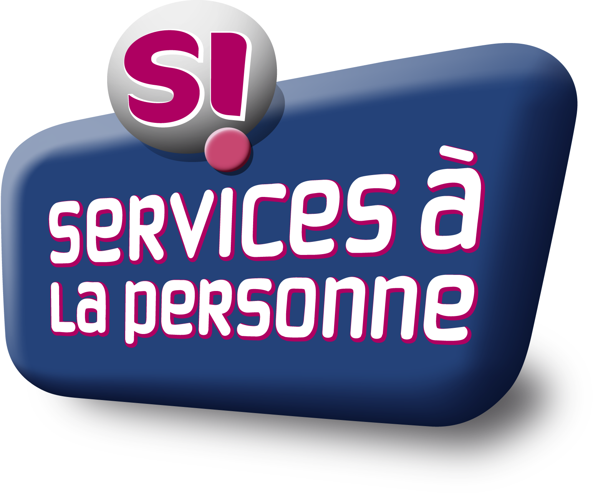
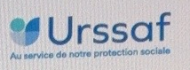

Je suis Mélanie,
J'ai créé Mellia Maison pour vous accompagner au quotidien avec des services à domicile adaptés à vos besoins.
Ménage et entretien du logement, rangement de pièces, courses, préparation de repas, aide administrative ou vigilance de votre domicile : je vous propose un accompagnement personnalisé, humain et de proximité.
Mon objectif : vous faire gagner du temps et simplifier votre quotidien avec un service sérieux, humain et de confiance.
Mes services à domicile
Ménage & entretien
Entretien régulier ou ponctuel du logement, sols, sanitaires, cuisine et vitres intérieures.
Rangement
Organisation et rangement des espaces de vie selon vos besoins.
Préparation de repas
Aide à la préparation de vos repas directement à domicile.
Courses à domicile
Livraison de courses pour vous faciliter le quotidien.
Assistance administrative
Aide aux démarches et aux documents administratifs à domicile.
Vigilance du domicile
Surveillance temporaire de votre habitation pendant vos absences.
Chaque demande fait l'objet d'un devis personnalisé, gratuit et sans engagement.
Mes avantages fiscaux


Mellia Maison est une entreprise déclarée de services à la personne. Pour les prestations éligibles, vous pouvez bénéficier d’un crédit d’impôt de 50 %, dans les conditions et limites prévues par la réglementation.
Comment bénéficier de l’Avance immédiate ?
Avec votre autorisation, Mellia Maison vous transmet un lien sécurisé pour demander votre inscription. Vous renseignez vous-même vos informations personnelles. Vous recevez ensuite les instructions de l’Urssaf pour activer votre compte sur particulier.urssaf.fr. Une fois l’activation confirmée, le service peut être utilisé pour les prestations éligibles.
Un service facultatif
L’Avance immédiate n’est pas obligatoire. Ce service gratuit est proposé par l’Urssaf et la Direction générale des Finances publiques. Vous pouvez choisir de ne pas l’activer et bénéficier, si vous êtes éligible, du crédit d’impôt selon la procédure fiscale habituelle.
Les avantages
Vous bénéficiez immédiatement de la déduction de votre crédit d’impôt disponible, vous consultez vos demandes de paiement et pouvez suivre le montant de votre avantage fiscal utilisé depuis votre espace personnel.
Comment ça marche ?
Mes prestations à domicile
Ménage et rangement
Entretien du logement et rangement des espaces.
Repas et courses
Préparation de repas à domicile et livraison de courses.
Assistance administrative
Aide aux démarches administratives à domicile.
Vigilance du domicile
Entretien et vigilance temporaire de votre domicile pendant votre absence.
L’éligibilité au crédit d’impôt dépend de la nature précise des prestations, des conditions légales et des plafonds applicables. Certaines activités sont soumises à des conditions particulières.
Informations officielles
Consultez les conditions du crédit d’impôt sur le site officiel des impôts.
Les modalités et conditions applicables sont à vérifier sur les sites officiels de l’Urssaf et des impôts.
Plaines de Nay, Pau et ses alentours
J’interviens dans les plaines de Nay, à Pau et dans les communes environnantes, dans un rayon de 20 km.
Au-delà de 20 km, un supplément de déplacement est prévu et précisé sur votre devis.
Demandez votre devis
Vous souhaitez des renseignements ou un accompagnement à domicile ? Contactez-moi pour échanger sur vos besoins et recevoir une proposition personnalisée.
Demander un devis gratuitmelliamaison@gmail.com